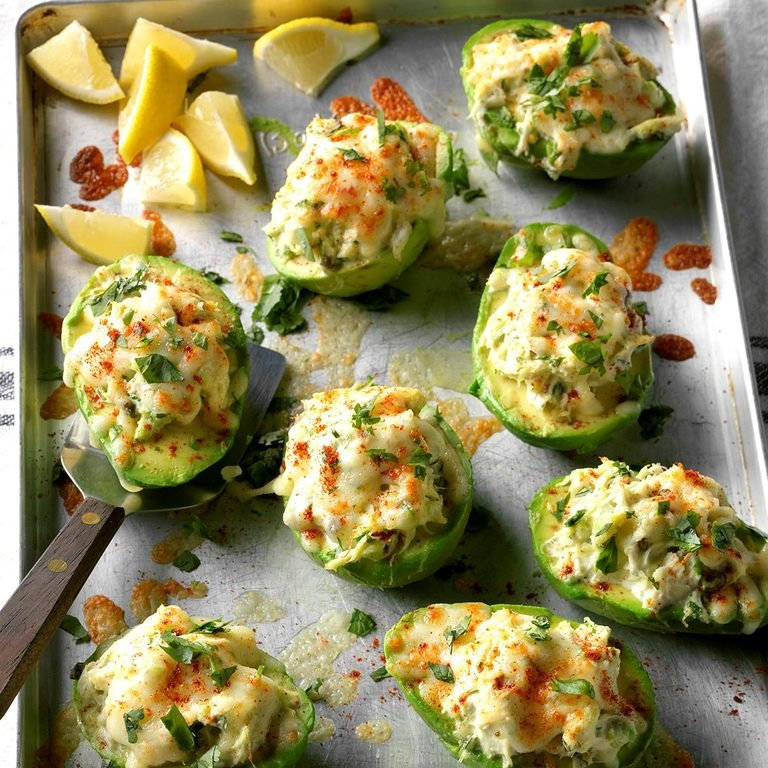

Avocado Crab Boats

Description:
A healthy snack for every ocation, you can replace the crab meat with chicken or meat of your preference.
Ingredients:
- 5 medium ripe avocados, peeled and halved
- 1/2 cup mayonnaise
- 2 tablespoons lemon juice
- 2 cans (6 ounces each) lump crabmeat, drained
- 4 tablespoons chopped fresh cilantro, divided
- 2 tablespoons minced chives
- 1 serrano pepper, seeded and minced
- 1 tablespoon capers, drained
- 1/4 teaspoon pepper
- 1 cup shredded pepper jack cheese
- 1/2 teaspoon paprika
- Lemon wedges
Steps:
- Preheat broiler
- Place 2 avocaldo halves in a large bowl and mash lightly with a fork
- Add mayonnaise and lemon juice; mix until well blended
- Stir in crabe meat (meat), 3 tablespoons cilantro, chives, serrano pepper, capers and pepper
- Spoon into remaining avocado halves
- Transfer to a baking pan
- Sprinkle with cheese and paprika
- Broil 4-5 in. From heat until cheese is melted, 3-5 min
- Sprinkle with remaining cilantro
- Get ready to eat!!
Homepage